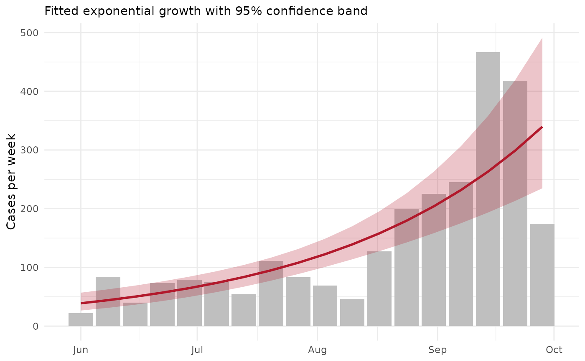

Epidemic growth rate, doubling time and reproduction number
epi_growth_rate.Rdepi_growth_rate() estimates how fast an epidemic grows from counts of
cases (or a line list of case dates) during its early, exponential
phase. The daily (or weekly) incidence is modelled with a log-linear
Poisson or negative binomial generalised linear model,
$$\log E[C_t] = \alpha + r t,$$
so the growth rate \(r\) and its standard error come directly from
the fitted model. From \(r\):
the doubling time is \(\log 2 / r\);
the reproduction number follows from the generation interval (Wallinga and Lipsitch 2007). For a gamma-distributed generation interval with mean \(\mu\) and standard deviation \(\sigma\), \(R = (1 + r \sigma^2/\mu)^{\mu^2/\sigma^2}\).
Confidence intervals are formed for \(r\) on the scale of the linear
predictor (Wald) and carried through these monotone transformations.
The fitted incidence and its confidence band are likewise computed on
the link scale with the model's standard errors and back-transformed, so
they are never negative. Choose window to cover the growth phase only:
once susceptible hosts are depleted or control begins, growth slows and
a single exponential no longer fits.
Arguments
- data
A data frame: either a line list with one row per case, or counts per time with a
casescolumn.- date
Column of dates (class
Date) or numeric times.- cases
Optional column of case counts; if
NULL, each row is one case.- window
Optional length-2 vector (same class as
date) giving the first and last time of the growth phase to fit.- unit
Time unit of the counts and of \(r\):
"day"or"week"(dates only).- family
"poisson"or"negbin"(negative binomial, for overdispersed counts; needs MASS).- generation_mean, generation_sd
Mean and standard deviation of the generation (or serial) interval, in
units. If omitted, \(R\) is not computed.- level
Confidence level.
Value
A list of class tmr_epi_growth: estimates (a tibble with the
growth rate, doubling time and \(R\), each with standard error or
interval), fitted (incidence per time with the fitted value, its
standard error on the link scale and confidence band), model (the
fitted glm) and the settings. plot() draws the observed incidence
with the fitted curve and band on a white background.
References
Wallinga, J. and Lipsitch, M. (2007). How generation intervals shape the relationship between growth rates and reproductive numbers. Proceedings of the Royal Society B, 274, 599-604.
WHO Ebola Response Team (2014). Ebola virus disease in West Africa: the first 9 months of the epidemic and forward projections. New England Journal of Medicine, 371, 1481-1495.
Examples
ebola <- outbreaks::ebola_sierraleone_2014
g <- epi_growth_rate(ebola,
date = date_of_onset,
window = as.Date(c("2014-06-01", "2014-09-30")), unit = "week",
family = "negbin", generation_mean = 15.3 / 7, generation_sd = 9.3 / 7
)
g$estimates
#> # A tibble: 3 × 6
#> quantity estimate std_error lower upper unit
#> <chr> <dbl> <dbl> <dbl> <dbl> <chr>
#> 1 growth_rate 0.127 0.0193 0.0897 0.165 per week
#> 2 doubling_time 5.44 NA 4.20 7.72 weeks
#> 3 reproduction_number 1.30 NA 1.21 1.40 secondary cases
plot(g)
